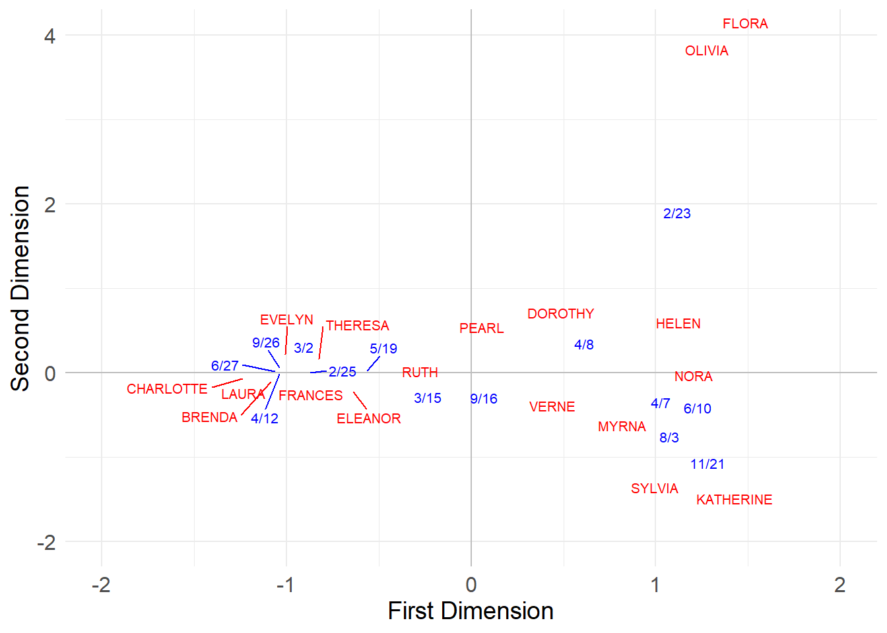
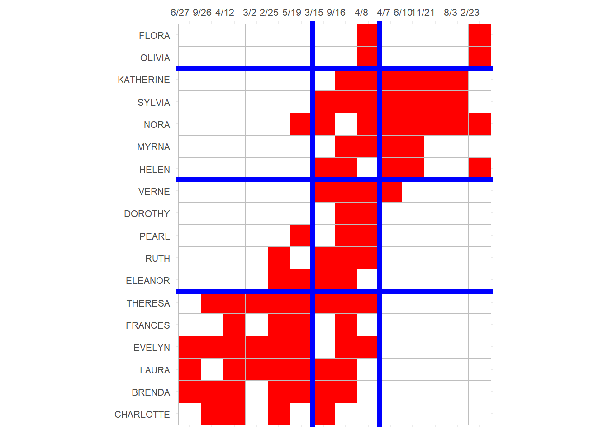
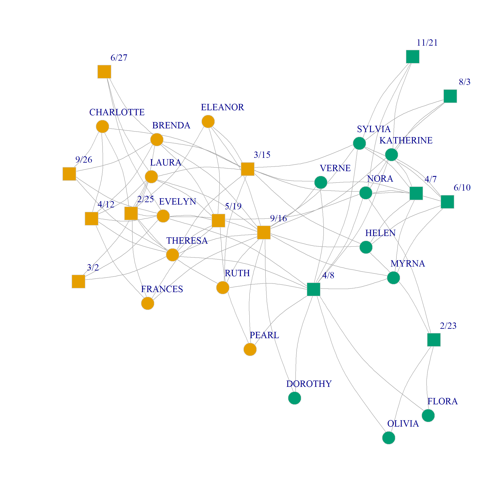

[,1] [,2] [,3]
[1,] 0.74 0.49 0.07
[2,] 0.88 0.26 0.51
[3,] 0.63 0.24 0.59Correspondence Analysis (CA) of Two-Mode Networks
Correspondence Analysis (CA) a relatively simple way to analyze and visualize two-mode data. However, there are a few additional computational details to discuss.
The Eigendecomposition of a Square Matrix
First, let us review the idea of an eigendecomposition of a square matrix. Let’s say we have the following matrix \(\mathbf{B}\) of dimensions \(3 \times 3\):
Most matrices like this can be decomposed into two other matrices \(\mathbf{U}\) and \(\mathbf{\lambda}\), such that the following matrix multiplication equation is true:
\[ \mathbf{B} = \mathbf{U}\mathbf{\lambda}\mathbf{U}^{-1} \]
Both \(\mathbf{U}\) and \(\mathbf{\lambda}\) are of the same dimensions as the original, with \(\mathbf{U}\) having numbers in each cell and \(\mathbf{\lambda}\) being a matrix with values along the diagonals and zeros everywhere else.
The column values of \(\mathbf{U}\) are called the eigenvectors of \(\mathbf{B}\) and the diagonal values of \(\mathbf{\lambda}\) are called the eigenvalues of \(\mathbf{B}\).
In R you can find the values that yield the eigendecomposition of any square matrix (if one exists) using the function eigen.
So in our case this would be:
eigen() decomposition
$values
[1] 1.4256541 0.3195604 -0.1552145
$vectors
[,1] [,2] [,3]
[1,] -0.5148954 -0.4669390 0.4838633
[2,] -0.6388257 0.2808667 -0.8653808
[3,] -0.5716507 0.8384997 -0.1303551The function eigen returns a list with two components, one called values are the diagonal values of \(\mathbf{\lambda}\), and the other one called vectors is the eigenvector matrix \(\mathbf{U}\).
We can check that these two elements can help us reconstruct the original matrix as follows:
[,1] [,2] [,3]
[1,] 0.74 0.49 0.07
[2,] 0.88 0.26 0.51
[3,] 0.63 0.24 0.59Which are indeed the original values of \(\mathbf{B}\)!
Now imagine that the matrix \(\mathbf{B}\) is symmetrical:
[,1] [,2] [,3]
[1,] 0.74 0.88 0.63
[2,] 0.88 0.26 0.24
[3,] 0.63 0.24 0.59And let’s do the eigendecomposition of this matrix:
eigen() decomposition
$values
[1] 1.7709909 0.2757779 -0.4567688
$vectors
[,1] [,2] [,3]
[1,] -0.7200185 -0.2389854 0.6515054
[2,] -0.4963684 -0.4787344 -0.7241766
[3,] -0.4849657 0.8448073 -0.2260728The interesting thing here is that now the reconstruction equation boils down to:
\[ \mathbf{B} = \mathbf{U}\mathbf{\lambda}\mathbf{U}^T \]
Note that now we just need to post-multiply \(\mathbf{U}\mathbf{\lambda}\) by the transpose of \(\mathbf{U}\) rather than the inverse, which is a much simpler matrix operation.
We can check that this is true as follows:
[,1] [,2] [,3]
[1,] 0.74 0.88 0.63
[2,] 0.88 0.26 0.24
[3,] 0.63 0.24 0.59Which are indeed the original values of the symmetric version of \(\mathbf{B}\)!
Now, the idea is that we can perform the asymmetric or symmetric eigendecomposition with any matrix, including a network adjacency matrix or a proximity matrix derived from it.
In fact, we have already done a partial version of the matrix eigendecomposition many times before, because the reflective status game is a way to compute the first column (leading eigenvector) of the \(\mathbf{U}\) matrix for any proximity or adjacency matrix you feed into it.
The more important thing is that, once you have the eigendecomposition of a matrix, and the full set of eigenvectors stored in \(\mathbf{U}\), the first few columns of \(\mathbf{U}\), gives us the best low dimensional approximation of the original matrix.
For instance, in the above case, the one-dimensional (also called “rank one”) approximation of the original matrix is given by:
\[ \mathbf{B}_{1-dim} = u_1\lambda_1u_1^T \]
Where \(u\) is just the first column (eigenvector) of \(\mathbf{U}\), and \(\lambda_1\) is just the first eigenvalue.
In R we can do this approximation as follows:
[,1] [,2] [,3]
[1,] 0.92 0.63 0.62
[2,] 0.63 0.44 0.43
[3,] 0.62 0.43 0.42Which are not quite the same as the original values of \(\mathbf{B}\), but they are not wildly far off either.
If we wanted to be more accurate, however, we would use a two-dimensional approximation (rank two) and thus use more of the information:
\[ \mathbf{B}_{2-dim} = u_1\lambda_1u_1^T + u_2\lambda_2u_2^T \]
In R:
u.2 <- as.matrix(U[, 2])
B.2dim <- u.1 %*% lambda[1, 1] %*% t(u.1) + u.2 %*% lambda[2, 2] %*% t(u.2)
round(B.2dim, 2) [,1] [,2] [,3]
[1,] 0.93 0.66 0.56
[2,] 0.66 0.50 0.31
[3,] 0.56 0.31 0.61Which are not the same as the original, but are now a bit closer!
Of course, if we wanted to reconstruct the original matrix, all we have to do is add the product of the eigenvector, eigenvalue, and transpose of the eigenvector across all three dimensions of the matrix:
u.3 <- as.matrix(U[, 3])
B.3dim <-
u.1 %*% lambda[1, 1] %*% t(u.1) +
u.2 %*% lambda[2, 2] %*% t(u.2) +
u.3 %*% lambda[3, 3] %*% t(u.3)
round(B.3dim, 2) [,1] [,2] [,3]
[1,] 0.74 0.88 0.63
[2,] 0.88 0.26 0.24
[3,] 0.63 0.24 0.59Which reconstructs the original values.
So in general, if you have a symmetric square matrix \(\mathbf{B}\) of dimensions \(k \times k\), and you obtain an eigenvalue decomposition of \(\mathbf{B}\) with eigenvectors stored in the columns of \(\mathbf{U}\) and eigenvalues in \(\lambda\), then the rank-\(p\) approximation of the original matrix is given by:
\[ \mathbf{B}_{rank-p} = \sum_{m = 1}^p u_{m}\lambda_mu_m^T \]
When \(p = k\), the equation above gives you the original matrix back. When \(p<k\) you get the best guess as to what the original was, given \(p\) dimensions.
Obtaining the Matrices We Need for CA
As you might have already guessed, two-mode CA boils down to the eigendecomposition of a suitable matrix, derived from the original affiliation (bi-adjacency) matrix of a two-mode network.
The goal is to come up with a low-rank (usually two-dimensional) approximation of the original affiliation network using the eigenvectors and eigenvalues obtained from the decomposition, as we did above with our toy example.
So which matrix should be use for CA?
Let’s find out:
First we need to create row stochastic versions of the affiliation matrix and its transpose \(\mathbf{A}\) and \(\mathbf{A}^T\). Recall that a matrix is row stochastic if their rows sum to one.
For the people, we can do this by taking the original affiliation matrix, and pre-multiplying it by a diagonal square matrix \(\mathbf{D}_P^{-1}\) of dimensions \(M \times M\) containing the inverse of the degrees of each person in the affiliation network along the diagonals and zeros everywhere else, yielding the row-stochastic matrix \(\mathbf{P}_{PG}\) of dimensions \(M \times N\):
\[ \mathbf{P}_{PG} = \mathbf{D}_P^{-1}\mathbf{A} \]
And we can do the same with the groups, except that we pre-multiply the transpose of the original affiliation matrix by \(\mathbf{D}_G^{-1}\) which is an \(N \times N\) matrix containing the inverse of the size of each group along the diagonals and zero everywhere else, this yields the matrix \(\mathbf{P}_{GP}\) of dimensions \(N \times M\):
\[ \mathbf{P}_{GP} = \mathbf{D}_G^{-1}\mathbf{A}^T \]
In R can compute \(\mathbf{P}_{PG}\) and \(\mathbf{P}_{GP}\), using the classic Southern Women two-mode data, as follows:
library(igraph)
library(networkdata)
g <- southern_women #southern women data
A <- as.matrix(as_biadjacency_matrix(g)) #bi-adjacency matrix
D.p <- diag(1/rowSums(A)) #inverse of degree matrix of persons
P.pg <- D.p %*% A
rownames(P.pg) <- rownames(A)
D.g <- diag(1/colSums(A)) #inverse of degree matrix of groups
P.gp <- D.g %*% t(A)
rownames(P.gp) <- colnames(A)And we can check that both \(\mathbf{P}_{PG}\) and \(\mathbf{P}_{GP}\) are indeed row stochastic:
EVELYN LAURA THERESA BRENDA CHARLOTTE FRANCES ELEANOR PEARL
1 1 1 1 1 1 1 1
RUTH VERNE MYRNA KATHERINE SYLVIA NORA HELEN DOROTHY
1 1 1 1 1 1 1 1
OLIVIA FLORA
1 1 6/27 3/2 4/12 9/26 2/25 5/19 3/15 9/16 4/8 6/10 2/23 4/7 11/21
1 1 1 1 1 1 1 1 1 1 1 1 1
8/3
1 And that they are of the predicted dimensions:
Great! Now, we can obtain the degree-normalized projections for people by multiplying \(\mathbf{P}_{PG}\) times \(\mathbf{P}_{GP}\):
\[ \mathbf{P}_{PP} = \mathbf{P}_{PG}\mathbf{P}_{GP} \]
Which produces the matrix \(\mathbf{P}_{PP}\) a square \(M \times M\) matrix containing the degree-normalized similarities between each pair of people.
We then do the same for groups:
\[ \mathbf{P}_{GG} = \mathbf{P}_{GP}\mathbf{P}_{PG} \]
Which produces the matrix \(\mathbf{P}_{GG}\) a square \(N \times N\) matrix containing the degree-normalized similarities between each pair of groups.
In R we obtain these matrices as follows:
Which are still row stochastic–but now square–matrices:
EVELYN LAURA THERESA BRENDA CHARLOTTE FRANCES ELEANOR PEARL
1 1 1 1 1 1 1 1
RUTH VERNE MYRNA KATHERINE SYLVIA NORA HELEN DOROTHY
1 1 1 1 1 1 1 1
OLIVIA FLORA
1 1 6/27 3/2 4/12 9/26 2/25 5/19 3/15 9/16 4/8 6/10 2/23 4/7 11/21
1 1 1 1 1 1 1 1 1 1 1 1 1
8/3
1 [1] 18 18[1] 14 14Let’s peek inside one of these matrices:
EVELYN LAURA THERESA BRENDA CHARLOTTE FRANCES ELEANOR PEARL RUTH
EVELYN 0.186 0.144 0.144 0.134 0.068 0.061 0.040 0.035 0.035
LAURA 0.165 0.179 0.132 0.132 0.056 0.070 0.060 0.028 0.042
THERESA 0.144 0.115 0.157 0.105 0.080 0.061 0.053 0.035 0.047
BRENDA 0.153 0.132 0.120 0.167 0.092 0.070 0.060 0.028 0.042
CHARLOTTE 0.135 0.098 0.160 0.160 0.160 0.073 0.056 0.000 0.056
FRANCES 0.122 0.122 0.122 0.122 0.073 0.122 0.080 0.049 0.049
VERNE MYRNA KATHERINE SYLVIA NORA HELEN DOROTHY OLIVIA FLORA
EVELYN 0.019 0.019 0.019 0.019 0.026 0.009 0.019 0.01 0.01
LAURA 0.024 0.010 0.010 0.024 0.032 0.024 0.010 0.00 0.00
THERESA 0.032 0.019 0.019 0.032 0.039 0.021 0.019 0.01 0.01
BRENDA 0.024 0.010 0.010 0.024 0.032 0.024 0.010 0.00 0.00
CHARLOTTE 0.025 0.000 0.000 0.025 0.025 0.025 0.000 0.00 0.00
FRANCES 0.018 0.018 0.018 0.018 0.031 0.018 0.018 0.00 0.00What are these numbers? Well, they can be interpreted as probabilities that a random walker starting at the row node and, following any sequence of \(person-group-person'-group'\) hops, will reach the column person. Thus, higher values indicate an affinity or proximity between the people (and the groups in the corresponding matrix).
Performing CA
We went through all these steps because CA is equivalent to the eigendecomposition of the last two square matrices we obtained, namely, \(\mathbf{P_{PP}}\) and \(\mathbf{P_{GG}}\):
Let’s see what we have here:
[1] 1.00 0.63 0.32 0.18 0.14 0.11 0.10 0.06 0.04 0.04 0.02 0.01 0.01 0.00 0.00
[16] 0.00 0.00 0.00 [1] 1.00 0.63 0.32 0.18 0.14 0.11 0.10 0.06 0.04 0.04 0.02 0.01 0.01 0.00So the two matrices have identical eigenvalues, and the first one is 1.0.
Let’s check out the first three eigenvectors:
rownames(CA.p$vectors) <- rownames(A)
rownames(CA.g$vectors) <- colnames(A)
round(CA.p$vectors[, 1:3], 2) [,1] [,2] [,3]
EVELYN -0.24 -0.24 0.03
LAURA -0.24 -0.25 -0.01
THERESA -0.24 -0.20 0.02
BRENDA -0.24 -0.26 -0.01
CHARLOTTE -0.24 -0.29 -0.01
FRANCES -0.24 -0.24 -0.02
ELEANOR -0.24 -0.15 -0.03
PEARL -0.24 -0.01 0.06
RUTH -0.24 -0.05 0.03
VERNE -0.24 0.13 -0.04
MYRNA -0.24 0.25 -0.10
KATHERINE -0.24 0.31 -0.22
SYLVIA -0.24 0.26 -0.20
NORA -0.24 0.26 -0.03
HELEN -0.24 0.24 0.07
DOROTHY -0.24 0.09 0.09
OLIVIA -0.24 0.33 0.66
FLORA -0.24 0.33 0.66 [,1] [,2] [,3]
6/27 0.27 -0.30 -0.01
3/2 0.27 -0.28 -0.04
4/12 0.27 -0.30 0.00
9/26 0.27 -0.30 -0.02
2/25 0.27 -0.25 0.00
5/19 0.27 -0.16 0.00
3/15 0.27 -0.04 0.05
9/16 0.27 -0.01 0.05
4/8 0.27 0.15 -0.19
6/10 0.27 0.32 0.22
2/23 0.27 0.35 -0.79
4/7 0.27 0.29 0.20
11/21 0.27 0.34 0.35
8/3 0.27 0.34 0.35So this is interesting. The first eigenvector of the decomposition of both \(\mathbf{P_{PP}}\) and \(\mathbf{P_{GG}}\) is just the same number for each person and group. Note that this is the eigenvector that is associated with the first eigenvalue which happens to be \(\lambda_1 = 1.0\).
So it looks like the first eigenvector is a pretty useless quantity (a constant) so we can discard it, keeping all the other ones. Now the old second eigenvector is the first, the old third is the second, and so on:
Note that the rest of the eigenvalues (discarding the 1.0 one) are arranged in descending order:
[1] 0.627 0.319 0.179 0.138 0.107 0.099 0.064 0.044 0.036 0.021 0.012 0.005
[13] 0.000 0.000 0.000 0.000 0.000The magnitude of the eigenvalue tells us how important is the related eigenvector in containing information about the original matrix. It looks like here, the first two eigenvectors contain a good chunk of the info.
We can check how much exactly by computing the ratio between the sum of the first two eigenvalues over the sum of all the eigenvalues:
Which tells us that the first two eigenvectors account for about 57% of the action (or more precisely we could reconstruct the original matrix with 57% accuracy using just these two eigenvectors and associated eigenvalues).
Because the magnitude of the CA eigenvectors don’t have a natural scale, it is common to normalize them to have a variance of 1.0 (Fouss, Saerens, and Shimbo 2016, 399), and the multiplying them by the square root of the eigenvalue corresponding to that dimension, so that the new variance is scaled to the importance of that dimension.
We can perform the normalization of the raw CA scores using the following function, which performs CA on the affiliation matrix:
norm.CA.vec <- function(x, s = 0.000001) {
D.p <- diag(rowSums(x)) #degree matrix for persons
D.g <- diag(colSums(x)) #degree matrix for groups
i.Dp <- solve(D.p) #inverse of degree matrix for persons
i.Dg <- solve(D.g) #inverse of degree matrix for groups
CA.p <- eigen(i.Dp %*% x %*% i.Dg %*% t(x)) #person CA
CA.g <- eigen(i.Dg %*% t(x) %*% i.Dp %*% x) #group CA
ev <- CA.p$values[2:length(CA.p$values)]
ev <- ev[which(ev > s)]
m <- length(ev)
CA.p <- CA.p$vectors[, 2:ncol(CA.p$vectors)]
CA.g <- CA.g$vectors[, 2:ncol(CA.g$vectors)]
rownames(CA.p) <- rownames(A)
rownames(CA.g) <- colnames(A)
Z.u.p <- matrix(0, nrow(x), m)
Z.u.g <- matrix(0, ncol(x), m)
Z.v.p <- matrix(0, nrow(x), m)
Z.v.g <- matrix(0, ncol(x), m)
rownames(Z.u.p) <- rownames(x)
rownames(Z.u.g) <- colnames(x)
rownames(Z.v.p) <- rownames(x)
rownames(Z.v.g) <- colnames(x)
for (i in 1:m) {
ev.p <- as.matrix(CA.p[, i])
ev.g <- as.matrix(CA.g[, i])
norm.p <- as.numeric(t(ev.p) %*% D.p %*% ev.p) #person norm
Z.u.p[, i] <- ev.p * sqrt(sum(A)/norm.p) #normalizing to unit variance
Z.v.p[, i] <- Z.u.p[, i] * sqrt(ev[i]) #normalizing to square root of eigenvalue
norm.g <- as.numeric(t(ev.g) %*% D.g %*% ev.g) #group norm
Z.u.g[, i] <- ev.g * sqrt(sum(A)/norm.g) #normalizing to unit variance
Z.v.g[, i] <- Z.u.g[, i] * sqrt(ev[i]) #normalizing to square root of eigenvalue
}
return(list(Z.u.p = Z.u.p, Z.u.g = Z.u.g,
Z.v.p = Z.v.p, Z.v.g = Z.v.g))
}This function takes the bi-adjacency matrix as input and returns two new set of normalized CA scores for both persons and groups as output. The normalized CA scores are stored in four separate matrices: \(\mathbf{Z_P^U}, \mathbf{Z_G^U}, \mathbf{Z_P^V}, \mathbf{Z_G^V}\).
One person-group set of scores is normalized to unit variance (Z.u.p and Z.u.g) and the other person-group set of scores is normalized to the scale of the eigenvalue corresponding to each CA dimension for both persons and groups (Z.v.p and Z.v.g).
Let’s see the normalization function at work, extracting the first two dimensions for persons and groups (the first two columns of each \(\mathbf{Z}\) matrix):
CA.res <- norm.CA.vec(A)
uni.p <- CA.res$Z.u.p[, 1:2]
uni.g <- CA.res$Z.u.g[, 1:2]
val.p <- CA.res$Z.v.p[, 1:2]
val.g <- CA.res$Z.v.g[, 1:2]
round(uni.p, 2) [,1] [,2]
EVELYN -1.01 0.20
LAURA -1.06 -0.07
THERESA -0.83 0.14
BRENDA -1.08 -0.09
CHARLOTTE -1.23 -0.07
FRANCES -1.01 -0.10
ELEANOR -0.65 -0.21
PEARL -0.05 0.37
RUTH -0.21 0.17
VERNE 0.55 -0.23
MYRNA 1.04 -0.58
KATHERINE 1.32 -1.33
SYLVIA 1.10 -1.20
NORA 1.10 -0.19
HELEN 1.02 0.44
DOROTHY 0.38 0.55
OLIVIA 1.38 3.98
FLORA 1.38 3.98 [,1] [,2]
6/27 -1.33 -0.02
3/2 -1.22 -0.16
4/12 -1.31 0.00
9/26 -1.31 -0.08
2/25 -1.12 0.00
5/19 -0.72 -0.01
3/15 -0.16 0.23
9/16 -0.04 0.24
4/8 0.65 -0.87
6/10 1.41 1.01
2/23 1.54 -3.64
4/7 1.29 0.91
11/21 1.48 1.61
8/3 1.48 1.61 [,1] [,2]
EVELYN -0.80 0.11
LAURA -0.84 -0.04
THERESA -0.65 0.08
BRENDA -0.86 -0.05
CHARLOTTE -0.97 -0.04
FRANCES -0.80 -0.06
ELEANOR -0.51 -0.12
PEARL -0.04 0.21
RUTH -0.17 0.10
VERNE 0.43 -0.13
MYRNA 0.83 -0.33
KATHERINE 1.05 -0.75
SYLVIA 0.87 -0.68
NORA 0.87 -0.11
HELEN 0.81 0.25
DOROTHY 0.30 0.31
OLIVIA 1.10 2.25
FLORA 1.10 2.25 [,1] [,2]
6/27 -1.05 -0.01
3/2 -0.97 -0.09
4/12 -1.04 0.00
9/26 -1.04 -0.05
2/25 -0.88 0.00
5/19 -0.57 -0.01
3/15 -0.13 0.13
9/16 -0.03 0.14
4/8 0.51 -0.49
6/10 1.12 0.57
2/23 1.22 -2.05
4/7 1.02 0.52
11/21 1.17 0.91
8/3 1.17 0.91Great! Now we have two sets (unit variance versus eigenvalue variance) of normalized CA scores for persons and groups on the first two dimensions.
The Duality of CA Scores Between Persons and Groups
Just like as we saw with the eigenvector centrality in the last handout, there is a duality between the CA scores assigned to the person and the groups on each dimension, such that the scores for each person are a weighted sum of the scores assigned to each group on that dimension and vice versa (Faust 1997, 171).
The main difference is that this time we sum scores across the \(\mathbf{P_P}\) and \(\mathbf{P_G}\) matrices rather than the original affiliation matrix and its transpose, resulting in degree-weighted sums of scores for both persons and groups.
So for any given person, on any given dimension, let’s say \(EVELYN\), her CA score is given by the sum of the (unit variance normalized) CA scores of the groups she belongs to weighted by her degree (done by multiplying each CA score by the relevant cell in Evelyn’s row of the \(\mathbf{P}_{PG}\) matrix):
Which is the same as the (eigenvalue variance) normalized score we obtained via CA for \(EVELYN\):
A similar story applies to groups. Each group score is the group-size-weighted sum of the (unit variance normalized) CA scores of the people who join it:
Which is the same as the (eigenvalue variance normalized) score we obtained via CA:
Neat! Duality at work.
Visualizing Two-Mode Networks Using CA
And, finally, we can use the first two (eigenvalue variance) normalized CA scores to plot the persons and groups in a common two-dimensional space:
val.g[, 2] <- val.g[, 2]*-1 #flippling sign of group scores on second dimension for plotting purposes
plot.dat <- data.frame(rbind(uni.p, val.g)) %>%
cbind(type = as.factor(c(rep(1, 18), rep(2, 14))))
library(ggplot2)
# install.packages("ggrepel")
library(ggrepel)
p <- ggplot(data = plot.dat, aes(x = X1, y = X2, color = type))
p <- p + geom_hline(aes(yintercept = 0), color = "gray")
p <- p + geom_vline(aes(xintercept = 0), color = "gray")
p <- p + geom_text_repel(aes(label = rownames(plot.dat)),
max.overlaps = 20, size = 2.75)
p <- p + theme_minimal()
p <- p + theme(legend.position = "none",
axis.title = element_text(size = 14),
axis.text = element_text(size = 12))
p <- p + scale_color_manual(values = c("red", "blue"))
p <- p + labs(x = "First Dimension", y = "Second Dimension")
p <- p + xlim(-2, 2) + ylim(-2, 4)
p
In this space, people with the most similar patterns of memberships to the most similar groups are placed close to one another. In the same way, groups with the most similar members are placed closed to one another.
Also like before, we can use the scores obtained from the CA analysis to re-arrange the rows and columns of the original matrix to reveal blocks of maximally similar persons and events:
library(ggcorrplot)
p <- ggcorrplot(t(A[order(val.p[,1]), order(val.g[,1])]),
colors = c("white", "white", "red"))
p <- p + theme(legend.position = "none",
axis.text.y = element_text(size = 8),
axis.text.x = element_text(size = 8, angle = 0),
)
p <- p + scale_x_discrete(position = "top")
p <- p + geom_hline(yintercept = 6.5, linewidth = 2, color = "blue")
p <- p + geom_hline(yintercept = 11.5, linewidth = 2, color = "blue")
p <- p + geom_hline(yintercept = 16.5, linewidth = 2, color = "blue")
p <- p + geom_vline(xintercept = 9.5, linewidth = 2, color = "blue")
p <- p + geom_vline(xintercept = 6.5, linewidth = 2, color = "blue")
p
Here CA seems to have detected two separate clusters of actors who preferentially attend two distinct clusters of events!
The three events in the middle \(\{3/15, 9/16, 4/8\}\) don’t seem to differentiate between participants in each cluster (everyone attends)–they thus appear near the origin in the CA diagram, indicating a weak association with either dimension.
However, the events to the left (with clusters of participants in the lower-left) and to the right of the x-axis (with clusters of participants in the upper-right) are attended preferentially by distinct groups of participants; they thus appear at the extreme left and right positions of the first dimension of the CA diagram.
In the same way, the four people in the middle \(\{Ruth, Dorothy, Pearl, Verne\}\) only attend the undifferentiated, popular events, so that means that they are not strongly associated with either cluster of actors (and thus appear near the origin in the CA diagram). The top and bottom participants, by contrast, appear to the extreme right and left in the CA diagram, indicating a strong association with the underlying dimensions.
Note the similarity between this blocking and that obtained from the structural equivalence analysis in the previous handout.
Community Detection in Bipartite Networks
You may have noticed that the CA analysis of two-mode networks looks a lot like the identification of communities in one-mode networks. The main difference is that in a two-mode network, good communities are composed of clusters of persons and groups well-separated from other clusters of persons and groups.
As Barber (2007) noted, we can extend Newman’s modularity approach to ascertain whether a given partition identifies a good “community” in the bipartite case. For that, we need a bi-adjacency analog of the modularity matrix \(\mathbf{B}\). This is given by:
\[ \mathbf{B}_{(ij)} = \mathbf{A}_{(ij)} - \frac{k^p_ik^g_j}{|E|} \]
Where \(k^p_i\) is the number of memberships of the \(i^{th}\) person, \(k^g_i\) is the number of members of the \(j^{th}\) group, and \(|E|\) is the number of edges in the bipartite graph.
So in our case, this would be:
dp <- as.matrix(rowSums(A))
dg <- as.matrix(colSums(A))
dpdg <- dp %*% t(dg) #person x group degree product matrix
B <- A - dpdg/sum(A)
round(B, 2) 6/27 3/2 4/12 9/26 2/25 5/19 3/15 9/16 4/8 6/10 2/23
EVELYN 0.73 0.73 0.46 0.64 0.28 0.28 -0.90 -0.26 -0.08 -0.45 -0.36
LAURA 0.76 0.76 0.53 -0.31 0.37 0.37 0.21 -0.10 -0.94 -0.39 -0.31
THERESA -0.27 0.73 0.46 0.64 0.28 0.28 0.10 -0.26 -0.08 -0.45 -0.36
BRENDA 0.76 -0.24 0.53 0.69 0.37 0.37 0.21 -0.10 -0.94 -0.39 -0.31
CHARLOTTE -0.13 -0.13 0.73 0.82 0.64 -0.36 0.55 -0.63 -0.54 -0.22 -0.18
FRANCES -0.13 -0.13 0.73 -0.18 0.64 0.64 -0.45 0.37 -0.54 -0.22 -0.18
ELEANOR -0.13 -0.13 -0.27 -0.18 0.64 0.64 0.55 0.37 -0.54 -0.22 -0.18
PEARL -0.10 -0.10 -0.20 -0.13 -0.27 0.73 -0.34 0.53 0.60 -0.17 -0.13
RUTH -0.13 -0.13 -0.27 -0.18 0.64 -0.36 0.55 0.37 0.46 -0.22 -0.18
VERNE -0.13 -0.13 -0.27 -0.18 -0.36 -0.36 0.55 0.37 0.46 -0.22 -0.18
MYRNA -0.13 -0.13 -0.27 -0.18 -0.36 -0.36 -0.45 0.37 0.46 0.78 -0.18
KATHERINE -0.20 -0.20 -0.40 -0.27 -0.54 -0.54 -0.67 0.06 0.19 0.66 -0.27
SYLVIA -0.24 -0.24 -0.47 -0.31 -0.63 -0.63 0.21 -0.10 0.06 0.61 -0.31
NORA -0.27 -0.27 -0.54 -0.36 -0.72 0.28 0.10 -1.26 -0.08 0.55 0.64
HELEN -0.17 -0.17 -0.34 -0.22 -0.45 -0.45 0.44 0.21 -0.67 0.72 0.78
DOROTHY -0.07 -0.07 -0.13 -0.09 -0.18 -0.18 -0.22 0.69 0.73 -0.11 -0.09
OLIVIA -0.07 -0.07 -0.13 -0.09 -0.18 -0.18 -0.22 -0.31 0.73 -0.11 0.91
FLORA -0.07 -0.07 -0.13 -0.09 -0.18 -0.18 -0.22 -0.31 0.73 -0.11 0.91
4/7 11/21 8/3
EVELYN -0.54 -0.27 -0.27
LAURA -0.47 -0.24 -0.24
THERESA -0.54 -0.27 -0.27
BRENDA -0.47 -0.24 -0.24
CHARLOTTE -0.27 -0.13 -0.13
FRANCES -0.27 -0.13 -0.13
ELEANOR -0.27 -0.13 -0.13
PEARL -0.20 -0.10 -0.10
RUTH -0.27 -0.13 -0.13
VERNE 0.73 -0.13 -0.13
MYRNA 0.73 -0.13 -0.13
KATHERINE 0.60 0.80 0.80
SYLVIA 0.53 0.76 0.76
NORA 0.46 0.73 0.73
HELEN 0.66 -0.17 -0.17
DOROTHY -0.13 -0.07 -0.07
OLIVIA -0.13 -0.07 -0.07
FLORA -0.13 -0.07 -0.07Neat! Like before the numbers in this matrix represent the expected probability of observing a tie in a world in which people keep their number of memberships and groups keep their observed sizes, but otherwise, people and groups connect at random.
We can also create a bipartite matrix version of the bi-adjacency modularity, as follows:
n <- vcount(g)
Np <- nrow(A)
names <- c(rownames(A), colnames(A))
B2 <- matrix(0, n, n) #all zeros matrix of dimensions (p + g) X (p + g)
B2[1:Np, (Np + 1):n] <- B #putting B in the top right block
B2[(Np + 1):n, 1:Np] <- t(B) #putting B transpose in the lower-left block
rownames(B2) <- names
colnames(B2) <- names
round(B2, 2) EVELYN LAURA THERESA BRENDA CHARLOTTE FRANCES ELEANOR PEARL RUTH
EVELYN 0.00 0.00 0.00 0.00 0.00 0.00 0.00 0.00 0.00
LAURA 0.00 0.00 0.00 0.00 0.00 0.00 0.00 0.00 0.00
THERESA 0.00 0.00 0.00 0.00 0.00 0.00 0.00 0.00 0.00
BRENDA 0.00 0.00 0.00 0.00 0.00 0.00 0.00 0.00 0.00
CHARLOTTE 0.00 0.00 0.00 0.00 0.00 0.00 0.00 0.00 0.00
FRANCES 0.00 0.00 0.00 0.00 0.00 0.00 0.00 0.00 0.00
ELEANOR 0.00 0.00 0.00 0.00 0.00 0.00 0.00 0.00 0.00
PEARL 0.00 0.00 0.00 0.00 0.00 0.00 0.00 0.00 0.00
RUTH 0.00 0.00 0.00 0.00 0.00 0.00 0.00 0.00 0.00
VERNE 0.00 0.00 0.00 0.00 0.00 0.00 0.00 0.00 0.00
MYRNA 0.00 0.00 0.00 0.00 0.00 0.00 0.00 0.00 0.00
KATHERINE 0.00 0.00 0.00 0.00 0.00 0.00 0.00 0.00 0.00
SYLVIA 0.00 0.00 0.00 0.00 0.00 0.00 0.00 0.00 0.00
NORA 0.00 0.00 0.00 0.00 0.00 0.00 0.00 0.00 0.00
HELEN 0.00 0.00 0.00 0.00 0.00 0.00 0.00 0.00 0.00
DOROTHY 0.00 0.00 0.00 0.00 0.00 0.00 0.00 0.00 0.00
OLIVIA 0.00 0.00 0.00 0.00 0.00 0.00 0.00 0.00 0.00
FLORA 0.00 0.00 0.00 0.00 0.00 0.00 0.00 0.00 0.00
6/27 0.73 0.76 -0.27 0.76 -0.13 -0.13 -0.13 -0.10 -0.13
3/2 0.73 0.76 0.73 -0.24 -0.13 -0.13 -0.13 -0.10 -0.13
4/12 0.46 0.53 0.46 0.53 0.73 0.73 -0.27 -0.20 -0.27
9/26 0.64 -0.31 0.64 0.69 0.82 -0.18 -0.18 -0.13 -0.18
2/25 0.28 0.37 0.28 0.37 0.64 0.64 0.64 -0.27 0.64
5/19 0.28 0.37 0.28 0.37 -0.36 0.64 0.64 0.73 -0.36
3/15 -0.90 0.21 0.10 0.21 0.55 -0.45 0.55 -0.34 0.55
9/16 -0.26 -0.10 -0.26 -0.10 -0.63 0.37 0.37 0.53 0.37
4/8 -0.08 -0.94 -0.08 -0.94 -0.54 -0.54 -0.54 0.60 0.46
6/10 -0.45 -0.39 -0.45 -0.39 -0.22 -0.22 -0.22 -0.17 -0.22
2/23 -0.36 -0.31 -0.36 -0.31 -0.18 -0.18 -0.18 -0.13 -0.18
4/7 -0.54 -0.47 -0.54 -0.47 -0.27 -0.27 -0.27 -0.20 -0.27
11/21 -0.27 -0.24 -0.27 -0.24 -0.13 -0.13 -0.13 -0.10 -0.13
8/3 -0.27 -0.24 -0.27 -0.24 -0.13 -0.13 -0.13 -0.10 -0.13
VERNE MYRNA KATHERINE SYLVIA NORA HELEN DOROTHY OLIVIA FLORA 6/27
EVELYN 0.00 0.00 0.00 0.00 0.00 0.00 0.00 0.00 0.00 0.73
LAURA 0.00 0.00 0.00 0.00 0.00 0.00 0.00 0.00 0.00 0.76
THERESA 0.00 0.00 0.00 0.00 0.00 0.00 0.00 0.00 0.00 -0.27
BRENDA 0.00 0.00 0.00 0.00 0.00 0.00 0.00 0.00 0.00 0.76
CHARLOTTE 0.00 0.00 0.00 0.00 0.00 0.00 0.00 0.00 0.00 -0.13
FRANCES 0.00 0.00 0.00 0.00 0.00 0.00 0.00 0.00 0.00 -0.13
ELEANOR 0.00 0.00 0.00 0.00 0.00 0.00 0.00 0.00 0.00 -0.13
PEARL 0.00 0.00 0.00 0.00 0.00 0.00 0.00 0.00 0.00 -0.10
RUTH 0.00 0.00 0.00 0.00 0.00 0.00 0.00 0.00 0.00 -0.13
VERNE 0.00 0.00 0.00 0.00 0.00 0.00 0.00 0.00 0.00 -0.13
MYRNA 0.00 0.00 0.00 0.00 0.00 0.00 0.00 0.00 0.00 -0.13
KATHERINE 0.00 0.00 0.00 0.00 0.00 0.00 0.00 0.00 0.00 -0.20
SYLVIA 0.00 0.00 0.00 0.00 0.00 0.00 0.00 0.00 0.00 -0.24
NORA 0.00 0.00 0.00 0.00 0.00 0.00 0.00 0.00 0.00 -0.27
HELEN 0.00 0.00 0.00 0.00 0.00 0.00 0.00 0.00 0.00 -0.17
DOROTHY 0.00 0.00 0.00 0.00 0.00 0.00 0.00 0.00 0.00 -0.07
OLIVIA 0.00 0.00 0.00 0.00 0.00 0.00 0.00 0.00 0.00 -0.07
FLORA 0.00 0.00 0.00 0.00 0.00 0.00 0.00 0.00 0.00 -0.07
6/27 -0.13 -0.13 -0.20 -0.24 -0.27 -0.17 -0.07 -0.07 -0.07 0.00
3/2 -0.13 -0.13 -0.20 -0.24 -0.27 -0.17 -0.07 -0.07 -0.07 0.00
4/12 -0.27 -0.27 -0.40 -0.47 -0.54 -0.34 -0.13 -0.13 -0.13 0.00
9/26 -0.18 -0.18 -0.27 -0.31 -0.36 -0.22 -0.09 -0.09 -0.09 0.00
2/25 -0.36 -0.36 -0.54 -0.63 -0.72 -0.45 -0.18 -0.18 -0.18 0.00
5/19 -0.36 -0.36 -0.54 -0.63 0.28 -0.45 -0.18 -0.18 -0.18 0.00
3/15 0.55 -0.45 -0.67 0.21 0.10 0.44 -0.22 -0.22 -0.22 0.00
9/16 0.37 0.37 0.06 -0.10 -1.26 0.21 0.69 -0.31 -0.31 0.00
4/8 0.46 0.46 0.19 0.06 -0.08 -0.67 0.73 0.73 0.73 0.00
6/10 -0.22 0.78 0.66 0.61 0.55 0.72 -0.11 -0.11 -0.11 0.00
2/23 -0.18 -0.18 -0.27 -0.31 0.64 0.78 -0.09 0.91 0.91 0.00
4/7 0.73 0.73 0.60 0.53 0.46 0.66 -0.13 -0.13 -0.13 0.00
11/21 -0.13 -0.13 0.80 0.76 0.73 -0.17 -0.07 -0.07 -0.07 0.00
8/3 -0.13 -0.13 0.80 0.76 0.73 -0.17 -0.07 -0.07 -0.07 0.00
3/2 4/12 9/26 2/25 5/19 3/15 9/16 4/8 6/10 2/23 4/7
EVELYN 0.73 0.46 0.64 0.28 0.28 -0.90 -0.26 -0.08 -0.45 -0.36 -0.54
LAURA 0.76 0.53 -0.31 0.37 0.37 0.21 -0.10 -0.94 -0.39 -0.31 -0.47
THERESA 0.73 0.46 0.64 0.28 0.28 0.10 -0.26 -0.08 -0.45 -0.36 -0.54
BRENDA -0.24 0.53 0.69 0.37 0.37 0.21 -0.10 -0.94 -0.39 -0.31 -0.47
CHARLOTTE -0.13 0.73 0.82 0.64 -0.36 0.55 -0.63 -0.54 -0.22 -0.18 -0.27
FRANCES -0.13 0.73 -0.18 0.64 0.64 -0.45 0.37 -0.54 -0.22 -0.18 -0.27
ELEANOR -0.13 -0.27 -0.18 0.64 0.64 0.55 0.37 -0.54 -0.22 -0.18 -0.27
PEARL -0.10 -0.20 -0.13 -0.27 0.73 -0.34 0.53 0.60 -0.17 -0.13 -0.20
RUTH -0.13 -0.27 -0.18 0.64 -0.36 0.55 0.37 0.46 -0.22 -0.18 -0.27
VERNE -0.13 -0.27 -0.18 -0.36 -0.36 0.55 0.37 0.46 -0.22 -0.18 0.73
MYRNA -0.13 -0.27 -0.18 -0.36 -0.36 -0.45 0.37 0.46 0.78 -0.18 0.73
KATHERINE -0.20 -0.40 -0.27 -0.54 -0.54 -0.67 0.06 0.19 0.66 -0.27 0.60
SYLVIA -0.24 -0.47 -0.31 -0.63 -0.63 0.21 -0.10 0.06 0.61 -0.31 0.53
NORA -0.27 -0.54 -0.36 -0.72 0.28 0.10 -1.26 -0.08 0.55 0.64 0.46
HELEN -0.17 -0.34 -0.22 -0.45 -0.45 0.44 0.21 -0.67 0.72 0.78 0.66
DOROTHY -0.07 -0.13 -0.09 -0.18 -0.18 -0.22 0.69 0.73 -0.11 -0.09 -0.13
OLIVIA -0.07 -0.13 -0.09 -0.18 -0.18 -0.22 -0.31 0.73 -0.11 0.91 -0.13
FLORA -0.07 -0.13 -0.09 -0.18 -0.18 -0.22 -0.31 0.73 -0.11 0.91 -0.13
6/27 0.00 0.00 0.00 0.00 0.00 0.00 0.00 0.00 0.00 0.00 0.00
3/2 0.00 0.00 0.00 0.00 0.00 0.00 0.00 0.00 0.00 0.00 0.00
4/12 0.00 0.00 0.00 0.00 0.00 0.00 0.00 0.00 0.00 0.00 0.00
9/26 0.00 0.00 0.00 0.00 0.00 0.00 0.00 0.00 0.00 0.00 0.00
2/25 0.00 0.00 0.00 0.00 0.00 0.00 0.00 0.00 0.00 0.00 0.00
5/19 0.00 0.00 0.00 0.00 0.00 0.00 0.00 0.00 0.00 0.00 0.00
3/15 0.00 0.00 0.00 0.00 0.00 0.00 0.00 0.00 0.00 0.00 0.00
9/16 0.00 0.00 0.00 0.00 0.00 0.00 0.00 0.00 0.00 0.00 0.00
4/8 0.00 0.00 0.00 0.00 0.00 0.00 0.00 0.00 0.00 0.00 0.00
6/10 0.00 0.00 0.00 0.00 0.00 0.00 0.00 0.00 0.00 0.00 0.00
2/23 0.00 0.00 0.00 0.00 0.00 0.00 0.00 0.00 0.00 0.00 0.00
4/7 0.00 0.00 0.00 0.00 0.00 0.00 0.00 0.00 0.00 0.00 0.00
11/21 0.00 0.00 0.00 0.00 0.00 0.00 0.00 0.00 0.00 0.00 0.00
8/3 0.00 0.00 0.00 0.00 0.00 0.00 0.00 0.00 0.00 0.00 0.00
11/21 8/3
EVELYN -0.27 -0.27
LAURA -0.24 -0.24
THERESA -0.27 -0.27
BRENDA -0.24 -0.24
CHARLOTTE -0.13 -0.13
FRANCES -0.13 -0.13
ELEANOR -0.13 -0.13
PEARL -0.10 -0.10
RUTH -0.13 -0.13
VERNE -0.13 -0.13
MYRNA -0.13 -0.13
KATHERINE 0.80 0.80
SYLVIA 0.76 0.76
NORA 0.73 0.73
HELEN -0.17 -0.17
DOROTHY -0.07 -0.07
OLIVIA -0.07 -0.07
FLORA -0.07 -0.07
6/27 0.00 0.00
3/2 0.00 0.00
4/12 0.00 0.00
9/26 0.00 0.00
2/25 0.00 0.00
5/19 0.00 0.00
3/15 0.00 0.00
9/16 0.00 0.00
4/8 0.00 0.00
6/10 0.00 0.00
2/23 0.00 0.00
4/7 0.00 0.00
11/21 0.00 0.00
8/3 0.00 0.00Which is a bipartite version of modularity matrix (\(\mathbf{\hat{B}}\)) with the same block structure as the bipartite adjacency matrix:
\[ \mathbf{\hat{B}} = \left[ \begin{matrix} \mathbf{O}_{M \times M} & \mathbf{B}_{M \times N} \\ \mathbf{B}^T_{N \times M} & \mathbf{O}_{N \times N} \end{matrix} \right] \]
Note that in \(\mathbf{\hat{B}}\) the modularity (expected number of edges) is set to zero for nodes of the same set (people and people; groups and groups), and to non-zero values for nodes of different sets (persons and groups).
Now, we can use the same approach we used in the unipartite case to check the modularity of some hypothetical partition of the nodes in the graph.
Take for instance, the CA scores in the first dimension that we obtained earlier. They do seem to divide the persons and groups into distinct communities. So let’s transform them into membership vectors (using dummy coding):
u1 <- rep(0, n)
u2 <- rep(0, n)
d <- c(eig.vec.p[, 1], eig.vec.g[, 1]) #original CA scores
u1[which(d > 0)] <- 1
u2[which(d <= 0)] <- 1
U <- cbind(u1, u2)
rownames(U) <- rownames(B2)
U u1 u2
EVELYN 0 1
LAURA 0 1
THERESA 0 1
BRENDA 0 1
CHARLOTTE 0 1
FRANCES 0 1
ELEANOR 0 1
PEARL 0 1
RUTH 0 1
VERNE 1 0
MYRNA 1 0
KATHERINE 1 0
SYLVIA 1 0
NORA 1 0
HELEN 1 0
DOROTHY 1 0
OLIVIA 1 0
FLORA 1 0
6/27 0 1
3/2 0 1
4/12 0 1
9/26 0 1
2/25 0 1
5/19 0 1
3/15 0 1
9/16 0 1
4/8 1 0
6/10 1 0
2/23 1 0
4/7 1 0
11/21 1 0
8/3 1 0Recall that we can check the modularity of a partition coded in a dummy matrix like U using the formula:
\[ \frac{tr(U^TBU)}{\sum_i\sum_ja_{ij}} \]
Where \(tr\) is the trace matrix operation (sum of the diagonals).
Let’s check it out:
Which looks pretty good!
Here’s a plot of the bipartite graph with nodes colored by the CA induced community bipartition:
V(g)$type <- bipartite_mapping(g)$type
V(g)$shape <- ifelse(V(g)$type, "square", "circle")
V(g)$color <- (U[, 1] - U[, 2]) + 2
set.seed(123)
plot(g,
vertex.size=7, vertex.frame.color="lightgray",
vertex.label.dist = 1.5, edge.curved=0.2,
vertex.label.cex = 1.35)
References
Barber, Michael J. 2007. “Modularity and Community Detection in Bipartite Networks.” Physical Review E—Statistical, Nonlinear, and Soft Matter Physics 76 (6): 066102.
Faust, Katherine. 1997. “Centrality in Affiliation Networks.” Social Networks 19 (2): 157–91.
Fouss, François, Marco Saerens, and Masashi Shimbo. 2016. Algorithms and Models for Network Data and Link Analysis. Cambridge University Press.